含凝態溶液組分的反應平衡
第十二章的 Ellingham 圖處理了純凝態相（純固體、純液體）與氣體的反應——活性恆為 1，平衡常數只涉及氣體分壓。但實際冶金反應遠比這複雜：煉鋼時，碳溶解在鐵液中（$a_\text{C} \neq 1$）；脫氧時，鋁和氧在鋼液中反應生成溶解在熔渣中的 Al₂O₃；不鏽鋼中的鉻會與溶解的氧反應生成 Cr₂O₃ 爐渣。這些反應的平衡不能用簡單的氣體分壓比來描述——必須使用活性（activity）。
第十三章將第九章的溶液熱力學和第十一、十二章的反應平衡融合為統一的框架。這是全書最長的一章（~100 頁），因為它涵蓋了從高溫煉鋼到半導體晶體生長的幾乎所有實際材料製程中的反應平衡計算。
在本章中，我們將學習：
- 當反應物和產物溶解在凝態相中時，如何寫出正確的平衡常數（使用活性而非濃度）
- Raoultian 與 Henrian（1 wt%）標準態的區別，以及如何在它們之間轉換
- 吉布斯相律在含化學反應系統中的應用
- 相穩定圖（Kellogg 圖）——在 $\log P_\text{O₂}$–$\log P_\text{SO₂}$ 空間中預測哪一相穩定
- 含化合物的二元系統的熱力學描述
- 非化學計量化合物（如 wüstite Fe₁₋ₓO）的熱力學
- Sieverts 定律——雙原子氣體在金屬中溶解度的平方根關係
- Wagner 交互作用參數——多溶質系統中活性係數的修正
🧭 本章推理地圖
純相假設失效（Ch12）→ 需要用活性描述凝態溶液成分（§13.1–§13.3）→ 標準態與相律決定可用變數和自由度（§13.3–§13.4）→ 相穩定圖與化合物圖示整理平衡區域（§13.5–§13.8）→ 氣體溶解與多溶質交互作用可用來設計煉鋼脫氧、脫硫與氣氛控制（§13.9–§13.10）。
13.1–13.2 凝態溶液中反應平衡的判據
從純相到溶液——為什麼活性不可或缺
在第十一、十二章中，我們處理的反應涉及純凝態相（如 Fe(s)、FeO(s)、C(s)）。純固體和純液體的活性定義為 1（$a = 1$），因此平衡常數簡化為僅由氣體分壓決定：
但當反應物或產物溶解在另一個凝態相中時——例如碳溶解在液態鐵中、MnO 溶解在熔渣中——它們的活性不再是 1。平衡常數必須使用活性來表示：
其中 $\nu_i$ 是計量係數（產物為正、反應物為負），$a_i$ 是成分 $i$ 在其實際所處相中的活性。這條方程式是整章的基石。
以活性表示的平衡常數
對於一個典型的煉鋼反應：
平衡常數為：
注意：C 和 O 的活性指的是它們在鐵液中的活性，使用 Henrian 標準態（以 1 wt% 為參考）；CO 的分壓以標準壓力 $P^\circ = 1\ \text{atm}$（或 1 bar）歸一化。如果使用 Raoultian 標準態（以純物質為參考），則 $a_\text{C}$ 和 $a_\text{O}$ 的數值不同，$K$ 的數值也隨之改變——但平衡時的實際組成是相同的。
碳在鐵液中的溶解反應可以寫為：
其標準自由能變 $\Delta G^\circ$ 不是碳的標準生成自由能，而是碳從純固態轉移到鐵液中 1 wt% 溶液的自由能變。這個數值需要從實驗測定。
與純相反應的關鍵區別
| 特徵 | 純凝態相反應（Ch12） | 凝態溶液反應（Ch13） |
|---|---|---|
| 凝態組分活性 | $a = 1$（常數） | $a_i = \gamma_i x_i$ 或 $a_i = f_i [\%i]$（組成相關） |
| 平衡常數 | 僅涉及氣體分壓 | 涉及氣體分壓 和 凝態組分活性 |
| 平衡組成求解 | 直接從 $K$ 得到氣體分壓 | 需聯立 $K$ 和活性–組成關係求解 |
| Ellingham 圖適用性 | 直接適用 | 需修正：考慮溶解自由能 |
| 標準態 | 純物質（唯一選擇） | Raoultian 或 Henrian（可選） |
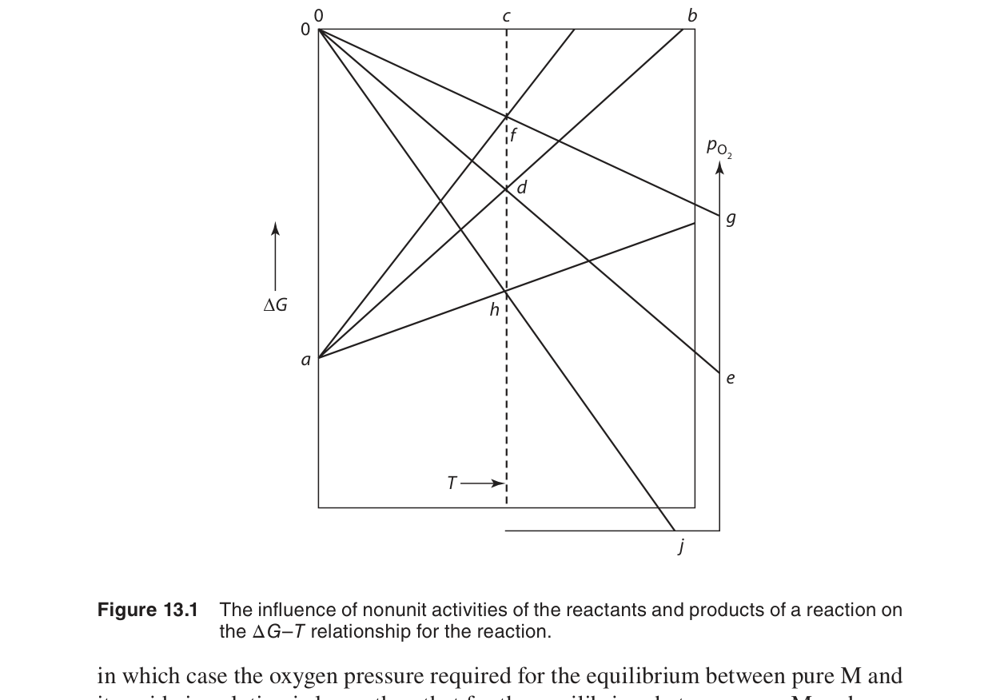
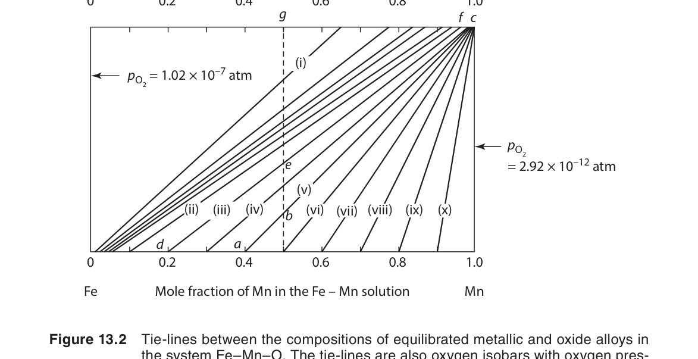
自編概念例：同一反應用活性寫平衡式
對 $\underline{C}+\underline{O}\rightleftharpoons CO(g)$，若碳與氧都溶於鐵液，平衡式應寫成 $K=(P_{CO}/P^\circ)/(a_C a_O)$。若直接用 wt% 取代活性，只有在 Henrian 標準態且活性係數接近 1 時才近似成立。
13.3 替代標準態（Alternative Standard States）
兩種標準態的並存
第九章介紹了兩種活性標準態：
- Raoultian 標準態：標準態是純物質（$x_i = 1$，$a_i = 1$）。活性係數 $\gamma_i \to 1$ 當 $x_i \to 1$。適用於溶劑（或高濃度成分）。$a_i^\text{R} = \gamma_i x_i$。
- Henrian 標準態：標準態是無限稀溶液的外插——可以是莫耳分率基準（$a_i \to x_i$ 當 $x_i \to 0$）或重量百分濃度基準（1 wt% 標準態，$a_i \to [\%i]$ 當 $[\%i] \to 0$）。活性係數 $f_i \to 1$ 當 $[\%i] \to 0$。適用於溶質（低濃度成分）。$a_i^\text{H} = f_i [\%i]$。
1 wt% 標準態——煉鋼的通用語言
在鋼鐵冶金中，溶質濃度幾乎總是以重量百分濃度（wt%）表示——因為化學分析給出的就是 wt%。使用莫耳分率需要知道所有成分的分子量並進行轉換——對於含有十幾種合金元素和雜質的鋼，這非常繁瑣。因此，Henrian 1 wt% 標準態成為鋼鐵冶金的標準做法。
1 wt% 標準態的定義：當溶質濃度趨近於零（無限稀溶液）時，活性等於重量百分濃度：
活性係數（Henrian）定義為：
標準態之間的轉換
兩種標準態下的活性關係為：
其中 $\gamma_i^\circ$ 是溶質 $i$ 在無限稀溶液中的 Raoultian 活性係數（Henry 常數與純物質蒸氣壓的比值），$M_\text{solvent}$ 和 $M_i$ 分別是溶劑和溶質的分子量。
對應的標準自由能變之間的關係為：
煉鋼中的實際範例
碳溶解於液態鐵（1600°C）的反應：
在 1600°C（1873 K）：
這表示碳從純固態轉移到鐵液中的 1 wt% 溶液是自發的（$\Delta G^\circ < 0$）——碳喜歡溶解在鐵中。這與直覺一致：你把石墨放進鐵水，它會溶解。
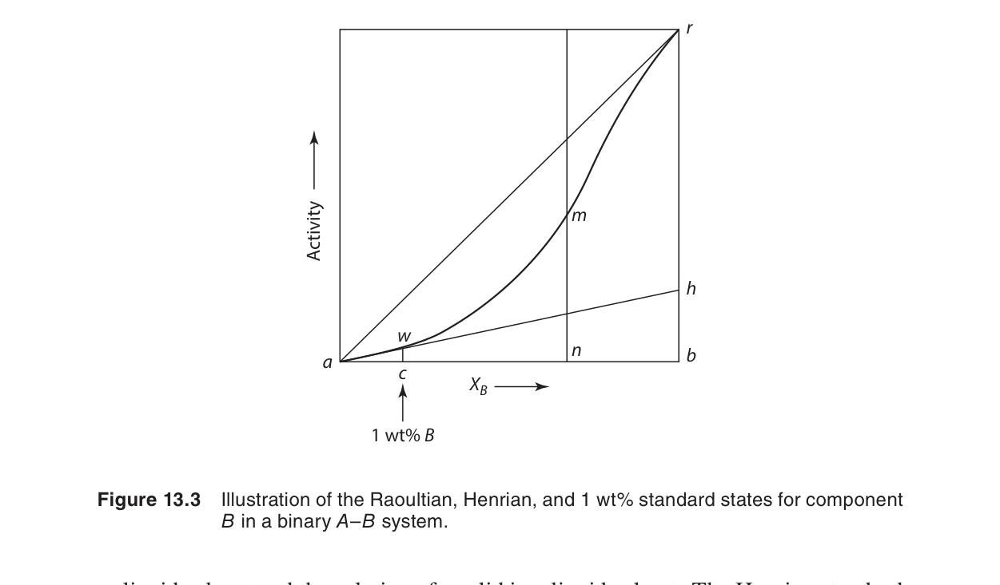
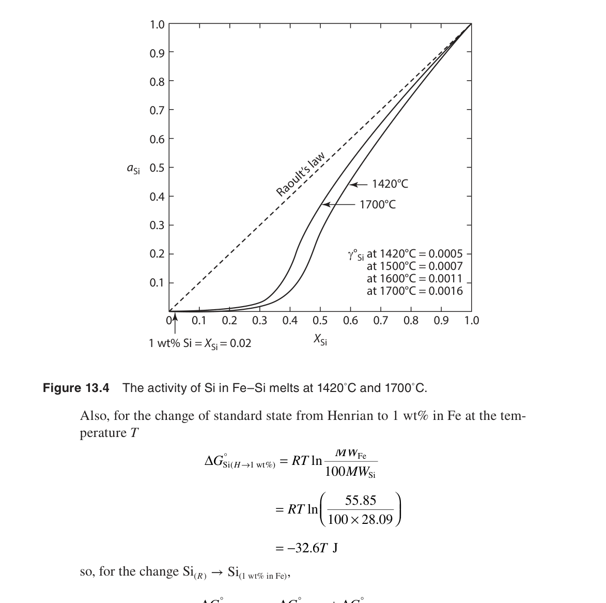
步驟 1：定義兩標準態下的化學位。化學位 $\mu_i$ 是物理實量，不隨標準態選擇而變：
步驟 2：在無限稀溶液極限下關聯兩標準態。當 $[\%i] \to 0$：$f_i \to 1$，$a_i^\text{R} = \gamma_i^\circ x_i$。莫耳分率與 wt% 的轉換（二元稀溶液）：
因此 $a_i^\text{R} = \gamma_i^\circ \frac{M_s}{100 M_i}[\%i]$，而 $a_i^\text{H} = [\%i]$。
步驟 3：等同兩化學位表達式，求解 $\Delta G^\circ_\text{H}$。
步驟 4：活性之間的轉換。$a_i^\text{H} = a_i^\text{R} \cdot \frac{\gamma_i^\circ M_s}{100 M_i}$。修正項同時考慮了莫耳分率↔wt% 的轉換因子和溶液的非理想性。
自編概念例：選擇合適標準態
鋼液中的氧通常只有 ppm 到 wt% 以下，適合用 1 wt% Henrian 標準態；液態 Fe 作為主成分則適合用 Raoultian 標準態。若把氧也當作純氧標準態，活性係數會非常不便，平衡常數也不適合工程計算。
13.4 吉布斯平衡相律（The Gibbs Equilibrium Phase Rule）
相律回顧與延伸
第七章介紹了吉布斯相律的基本形式：
其中 $F$ = 自由度數（可獨立改變的強度變數數量），$C$ = 獨立組分數，$P$ = 相數。數字 2 對應於溫度 $T$ 和壓力 $P$ 兩個強度變數。
化學反應對組分數的影響
當系統中存在化學反應時，組分數 $C$ 的計算需要修正。每一個獨立的化學反應引入一個約束（平衡常數關係），減少一個自由度。獨立組分數定義為：
其中 $N$ = 存在的化學物種數，$R$ = 獨立化學反應數（或獨立化學平衡約束數）。
經典範例：CaCO₃ 分解
- $N = 3$（三種化學物種：CaCO₃、CaO、CO₂）
- $R = 1$（一個化學反應）
- $C = 3 - 1 = 2$ 個獨立組分（例如可選 CaO 和 CO₂）
- $P = 3$（兩個固相 + 一個氣相）
- $F = 2 - 3 + 2 = 1$：只有一個自由度。在給定溫度下，$P_{\text{CO}_2}$ 被唯一確定——這正是第七章的結論。
擴展示例 1：NH₄Cl 分解（一個固相產生兩種氣體）
- $N = 3$（NH₄Cl、NH₃、HCl）
- $R = 1$（一個化學反應）
- $C = 3 - 1 = 2$
- $P = 2$（一個固相 + 一個氣相）
- $F = 2 - 2 + 2 = 2$：兩個自由度。但若有特殊限制（初始只有 NH₄Cl，故 $P_{\text{NH}_3} = P_{\text{HCl}}$），則增加一個約束，$F$ 降為 1——固定溫度後系統完全確定。
擴展示例 2：煉鋼中的 Fe–C–O 系統
考慮鋼液中同時存在碳和氧：
- 物種：溶解 C、溶解 O、CO 氣體、Fe 溶劑 → $N = 3$（不計溶劑）
- $R = 1$（一個化學反應）
- $C = 3 - 1 = 2$
- $P = 2$（液態鋼 + 氣相）
- $F = 2 - 2 + 2 = 2$：固定 $T$ 後仍有 1 個自由度——可在一定範圍內調整 C 濃度，O 濃度隨平衡常數自動確定
如果加上特殊約束——如 $P_{\text{CO}}$ 被外界固定為 1 atm（開放系統吹氬氣）——則自由度再減 1：固定 $T$ 後，$a_\text{C} \cdot a_\text{O} = P_{\text{CO}}/K$ 為常數，但 C 和 O 仍可獨立調整其一。
擴展示例 3：三元凝聚系統 SiO₂–Al₂O₃–MgO
- $N = 3$ 氧化物，無化學反應 → $C = 3$
- 忽略氣相（凝聚系統），壓力影響甚微 → 相律中「+2」變為「+1」（僅溫度為強度變數）
- $F = C - P + 1 = 4 - P$
- 若有 $P = 3$ 相共存（如液相 + 兩個固溶體），$F = 1$——在固定溫度下，三相共存僅發生在特定組成點（三元共晶點）
凝態溶液反應的相律
當反應涉及凝態溶液時，相律變得更加微妙。考慮煉鋼中的脫碳反應：
- 物種數 $N = 3$（溶解 C、溶解 O、CO 氣體），但鐵是溶劑不計入獨立組分
- 反應數 $R = 1$
- $C = 3 - 1 = 2$（可選 C 和 O）
- $P = 2$（液態鐵溶液 + 氣相）
- $F = 2 - 2 + 2 = 2$：兩個自由度。固定 $T$ 和 $P$ 後，系統仍有 0 個自由度？不——固定 $T$ 後，還可以在一定範圍內調整 C 和 O 的濃度（受平衡常數約束：$a_\text{C} \cdot a_\text{O} = P_{\text{CO}}/K$）。如果 CO 壓力固定（如 1 atm），則 $a_\text{C} \cdot a_\text{O}$ 固定，但仍可獨立調整 $a_\text{C}$（意味著 $a_\text{O}$ 必須隨之改變）。系統有 1 個自由度（在給定 $T$ 和 $P_{\text{CO}}$ 下）。
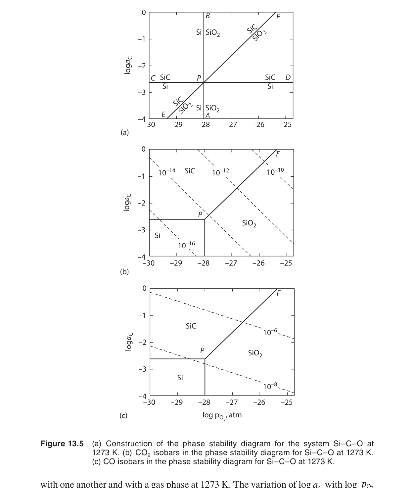
Duhem 定理——當總量也被指定時
相律基於強度變數（$T$、$P$、組成）。但在實際問題中，我們通常還知道系統的總質量或初始組成（廣度變數）。Duhem 定理指出：對於一個封閉系統（已知初始各元素的總莫耳數），平衡狀態完全由兩個獨立變數確定——通常是 $T$ 和 $P$。這意味著無論系統有多少相和反應，只要指定了初始總組成和 $T$、$P$，平衡狀態就完全確定了。
自編概念例：反應如何降低自由度
若一個系統有 3 個化學物種、1 個獨立反應與 2 個相，則可用 $C=N-R=2$ 先求成分數，再代入 $F=C-P+2=2$。這代表指定兩個強度變數後，其他平衡組成就被約束住。
13.5 相穩定圖（Phase Stability Diagrams）
Kellogg 圖——高溫腐蝕的相圖
相穩定圖（又稱 Kellogg 圖或優勢區圖，predominance area diagrams）是冶金熱力學中最重要的圖形工具之一——與 Ellingham 圖（第十二章）和 Pourbaix 圖（第十四章）並列為三大熱力學圖。它們在 $\log P_\text{O₂}$–$\log P_\text{SO₂}$（或 $\log P_\text{O₂}$–$\log P_\text{S₂}$）空間中標示出金屬、氧化物、硫化物、硫酸鹽各自的穩定區域。
這對於理解高溫腐蝕至關重要：鍋爐管在含硫煙氣中的腐蝕、燃氣渦輪葉片在燃燒產物中的退化、以及銅/鎳冶煉中冰銅（matte）與爐渣的平衡，都可以用相穩定圖來分析。
相邊界的推導
以鎳的氧–硫系統為例，考慮以下反應和平衡條件：
Ni/NiO 邊界：
Ni/NiS 邊界：
NiO/NiSO₄ 邊界：
由於 $\text{SO}_3$ 與 $\text{O}_2$ 和 $\text{S}_2$ 通過 $\text{S}_2 + 3\text{O}_2 \rightleftharpoons 2\text{SO}_3$ 相關，邊界在 $\log P_{\text{O}_2}$–$\log P_{\text{SO}_2}$ 圖中是一條斜線。
給定反應：
標準生成自由能（來自熱力學資料庫）：
步驟 1：寫出平衡常數。
對於純固體 Ni 和 NiO：$a_{\text{Ni}} = 1$，$a_{\text{NiO}} = 1$。
步驟 2：求解 $P_{\text{O}_2}$。
步驟 3：取對數，得到邊界方程式。
步驟 4：代入數值（以 1000 K 為例）。
因此在 1000 K 下，Ni/NiO 邊界是 $\log P_{\text{O}_2} = -15.6$ 的一條水平線。當 $\log P_{\text{O}_2} > -15.6$ 時 NiO 穩定；當 $\log P_{\text{O}_2} < -15.6$ 時 Ni 金屬穩定。
步驟 5：推廣至含硫化學位的情況。當系統中同時存在 O₂ 和 S₂ 時，NiO 與 NiSO₄ 之間的邊界由以下反應決定：
取對數後得到一條斜率為 $-3$ 的直線（在 $\log P_{\text{S}_2}$ vs $\log P_{\text{O}_2}$ 圖中）：
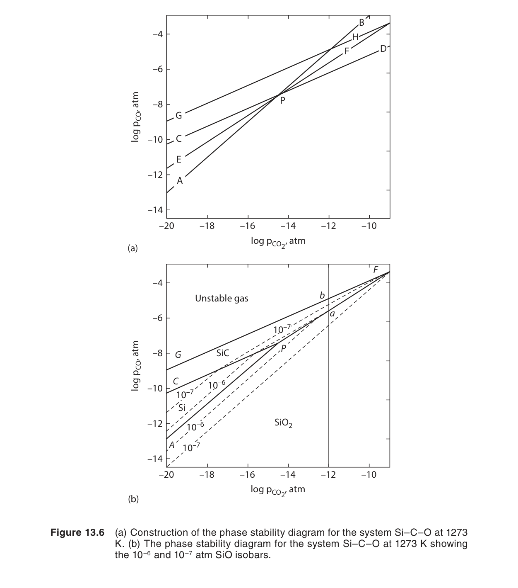
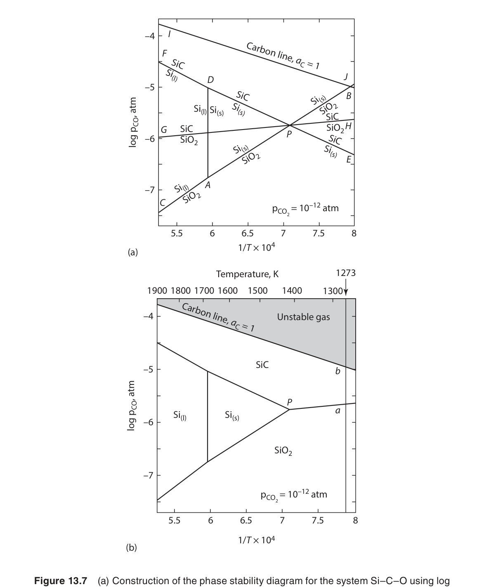
金屬–氧–硫系統的典型特徵
| 區域 | $\log P_{\text{O}_2}$ | $\log P_{\text{SO}_2}$（或 $\log P_{\text{S}_2}$） | 穩定相 |
|---|---|---|---|
| 低氧、低硫 | 很負（還原性） | 很負 | 金屬 |
| 中等氧、低硫 | 中等 | 低 | 氧化物 |
| 低氧、中等硫 | 低 | 中等 | 硫化物 |
| 高氧、高硫 | 較正（氧化性） | 較高 | 硫酸鹽 |
這些圖在給定溫度下繪製——不同溫度對應不同的圖（因為平衡常數隨溫度變化）。
與 Ellingham 圖和 Pourbaix 圖的關係
- Ellingham 圖（Ch12）：$\Delta G^\circ$ vs $T$，每條線對應一個氧化反應。適合比較不同氧化物的相對穩定性，溫度是變數。
- Kellogg 圖（Ch13.5）：$\log P_{\text{O}_2}$ vs $\log P_{\text{SO}_2}$（或 $\log P_{\text{S}_2}$），在固定溫度下。適合分析複雜氣氛中的腐蝕行為。
- Pourbaix 圖（Ch14）：電位 vs pH，在水溶液中。Kellogg 圖可視為高溫、非水系統的對應物。
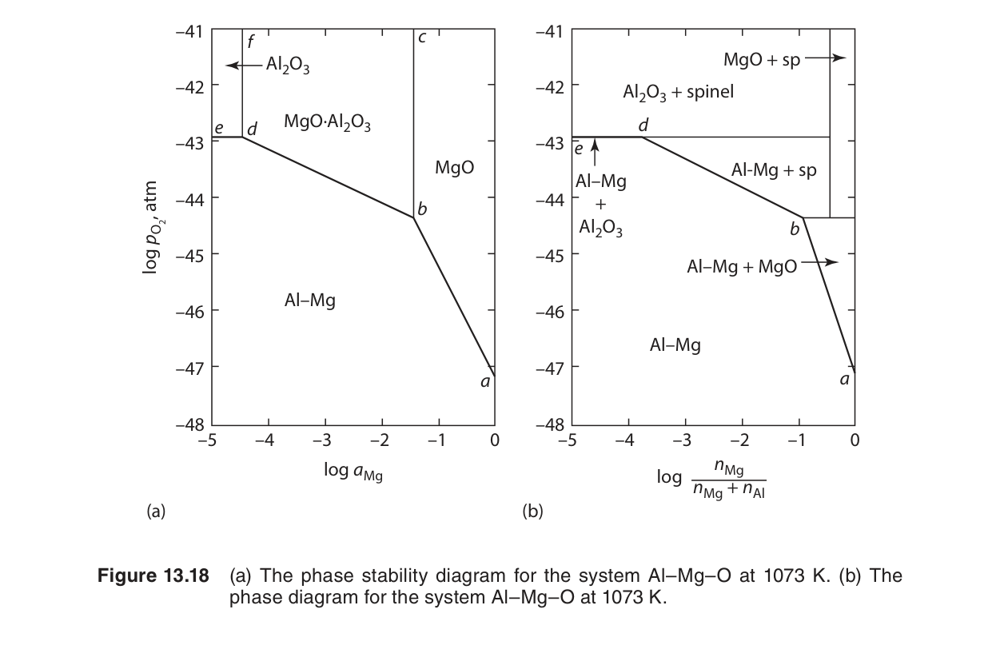
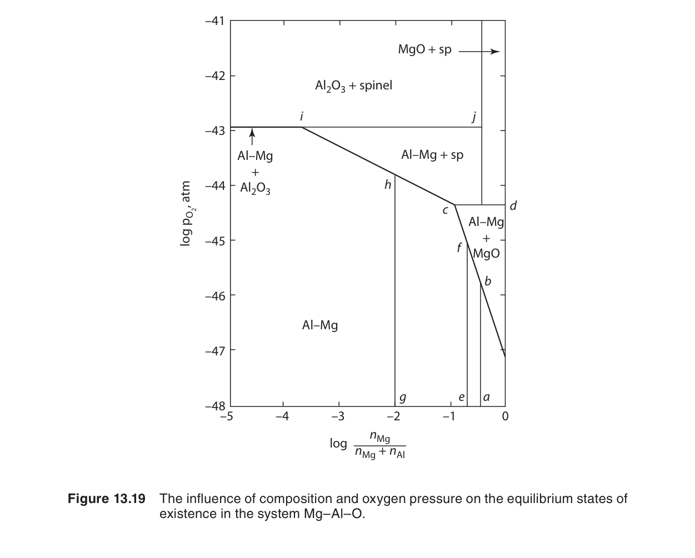
自編概念例：用操作點判斷穩定相
若某操作點的 $\log P_{O_2}$ 較高且 $\log P_{SO_2}$ 也高，金屬硫化物可能轉入氧化物或硫酸鹽穩定區。若把氣氛往低氧勢移動，操作點可能回到硫化物區，這就是焙燒氣氛控制的熱力學基礎。
13.6 含化合物的二元系統（Binary Systems Containing Compounds）
化合物的生成自由能與相圖
第十章討論了二元相圖的熱力學基礎——當液態和固態的自由能–組成（$G$–$x$）曲線相交時，通過公切線構造（common tangent construction）得到平衡相組成。當 A–B 系統中形成中間化合物（如 Fe₃C 在 Fe–C 系統、CaSiO₃ 在 CaO–SiO₂ 系統）時，$G$–$x$ 曲線在化合物組成處出現一個尖銳的凹陷（deep cusp）——因為化合物的自由能遠低於同組成的機械混合物。
化合物的標準生成自由能：
如果 $\Delta G_f^\circ$ 很負，則化合物非常穩定——它在相圖上表現為一個線化合物（line compound）（熔點尖峰，幾乎沒有均勻性範圍）。如果 $\Delta G_f^\circ$ 不太負，化合物可能有一定程度的非化學計量（見 13.8 節）。
Fe–C 系統中的 Fe₃C
滲碳體（cementite，Fe₃C）是鋼鐵中最重要的化合物。它的生成自由能決定了碳在鐵中的固溶度極限（$\alpha$-Fe 中約 0.02 wt% C，$\gamma$-Fe 中約 2.1 wt% C）。Fe₃C 相對於石墨是亞穩的（metastable）——$\Delta G_f^\circ(\text{Fe}_3\text{C}) > \Delta G_f^\circ(\text{石墨} + 3\text{Fe})$ 在高溫下為正（石墨更穩定），但在低溫下動力學阻礙了石墨的生成，所以我們看到的是 Fe–Fe₃C 亞穩相圖。
CaO–SiO₂ 系統中的矽酸鈣
煉鋼爐渣主要由 CaO 和 SiO₂ 組成。CaO–SiO₂ 系統形成多種化合物：CaSiO₃（矽灰石，wollastonite）、Ca₂SiO₄（正矽酸鈣，dicalcium silicate）、Ca₃SiO₅（矽酸三鈣，tricalcium silicate）。這些化合物的生成自由能決定了爐渣中各成分的活性——進而影響脫磷、脫硫反應的平衡。
爐渣的鹼度通常定義為 $V = \%\text{CaO}/\%\text{SiO}_2$。高鹼度爐渣（$V > 2$）中 CaO 活性高——有利於脫磷（生成 Ca₃(PO₄)₂）和脫硫（生成 CaS）。
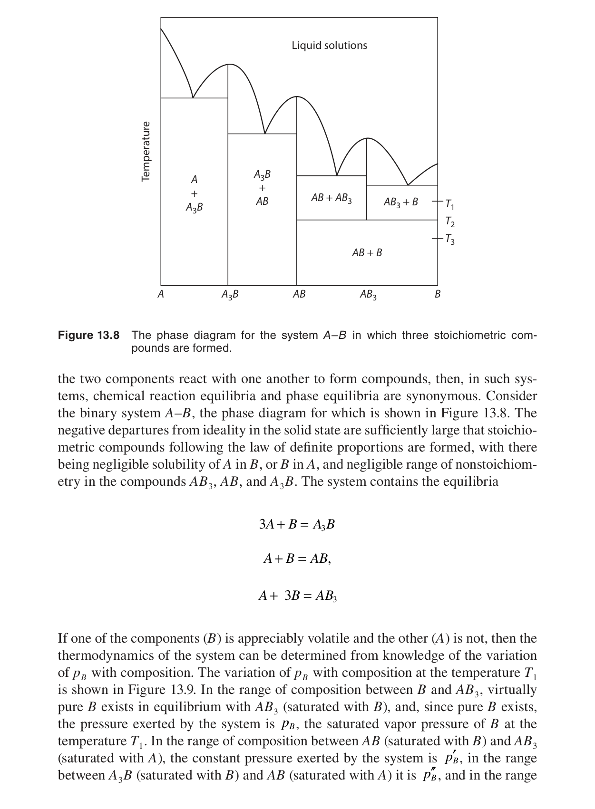
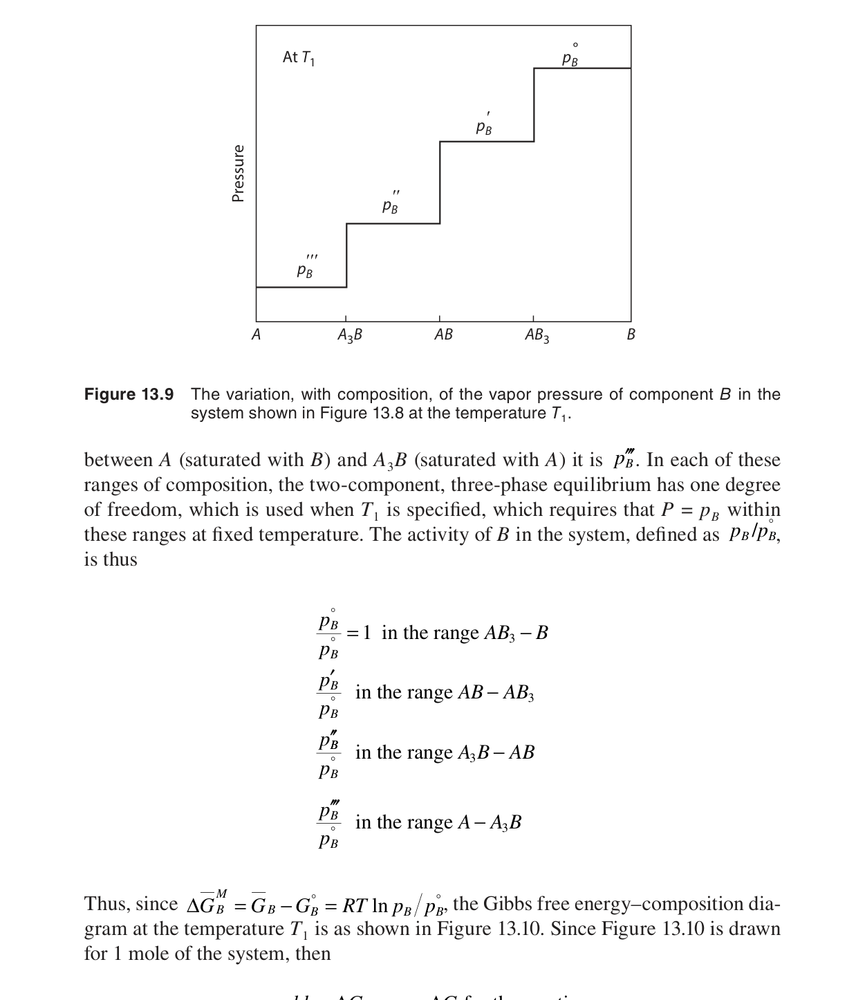
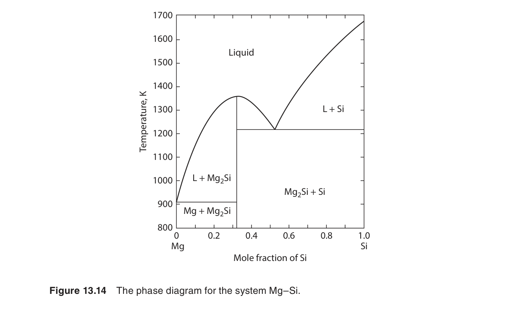
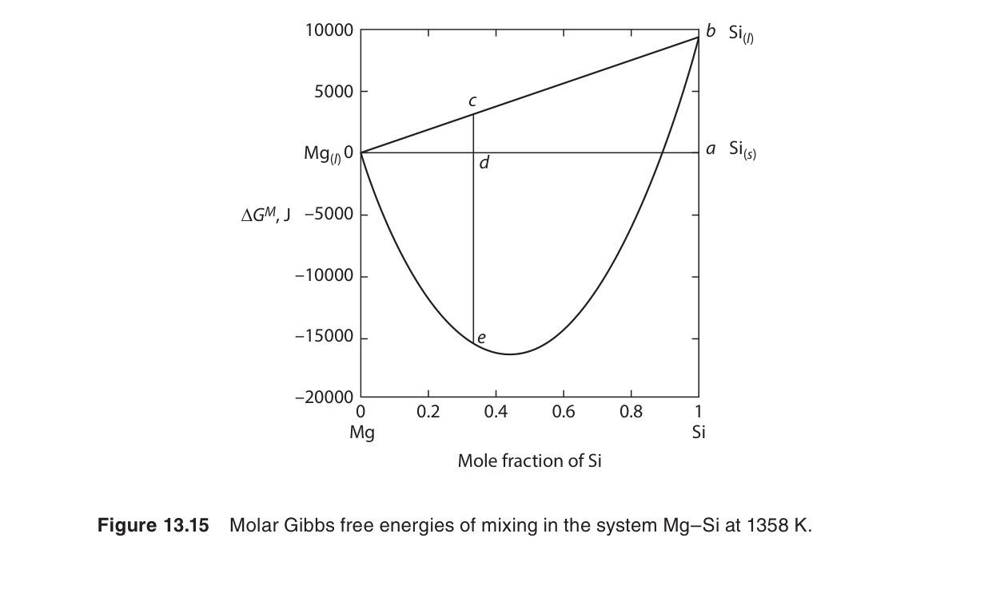
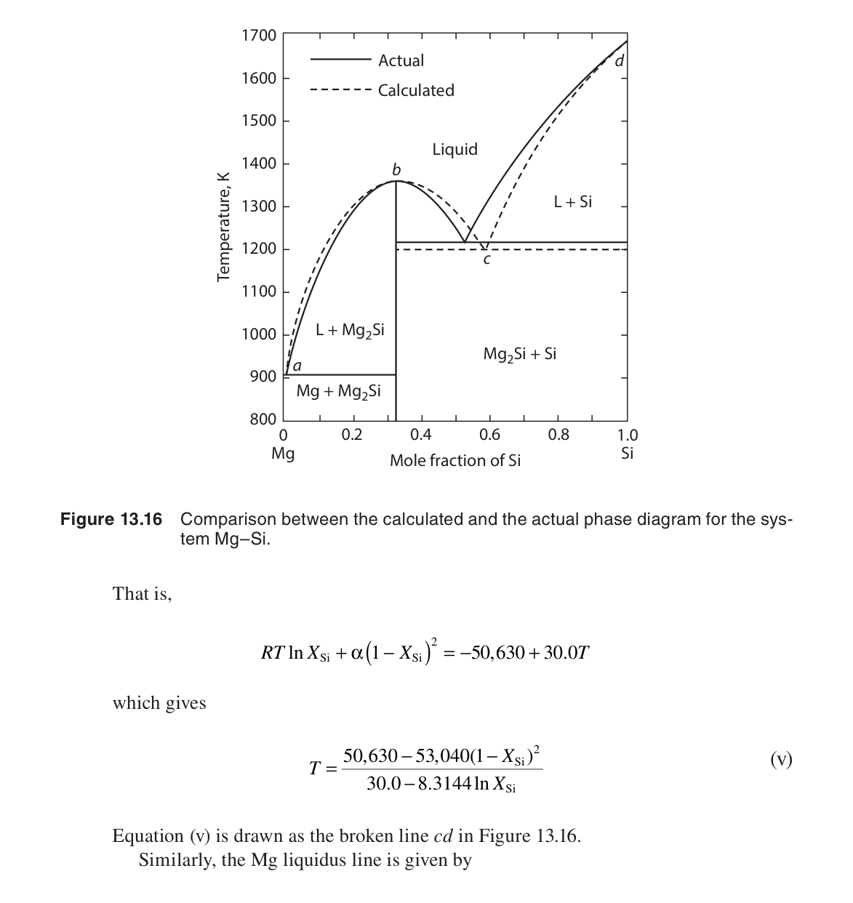
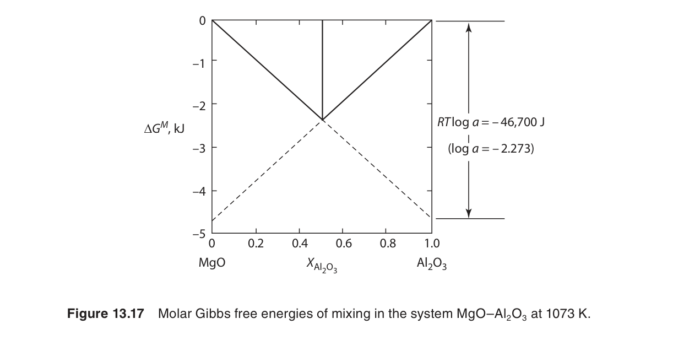
自編概念例：化合物形成自由能如何改變相圖
若 AB 化合物的 $\Delta G_f^\circ$ 很負，$G$–$x$ 曲線會在 AB 組成附近形成深谷，共切線可能連接 A-rich 固溶體與 AB，表示兩相共存。若 $\Delta G_f^\circ$ 不夠負，AB 可能不成為穩定相。
13.7 相平衡的圖示（Graphical Representation of Phase Equilibria）
整合 $G$–$x$ 曲線與反應平衡
第十章使用 $G$–$x$ 曲線和公切線構造來決定兩相平衡。當系統中還存在化學反應時（例如一個相可以分解為另外兩個相），我們需要同時考慮：
- 相平衡條件：每個成分在共存相中的化學位相等（$\mu_i^\alpha = \mu_i^\beta$）
- 化學反應平衡條件：$\sum \nu_i \mu_i = 0$（即 $\Delta G = 0$）
三元系統中的反應平衡圖
在三元系統（如金屬–氧–硫）中，我們可以繪製 Gibbs 三角圖（組成三角形），並在上面標示出反應平衡線——這些線將圖分為不同相穩定區域。對於凝態溶液系統，這與 13.5 節的 Kellogg 圖是等價的——只是變數從氣體分壓換成了凝態相的組成。
公切線構造在含反應系統中的推廣：當一個相（如液態溶液）與兩個固相（如 AO 和 BO）平衡時，液態的 $G$–$x$ 曲線必須同時與兩個固相的 $G^\circ$ 值相切——這給出了液態的平衡組成範圍。
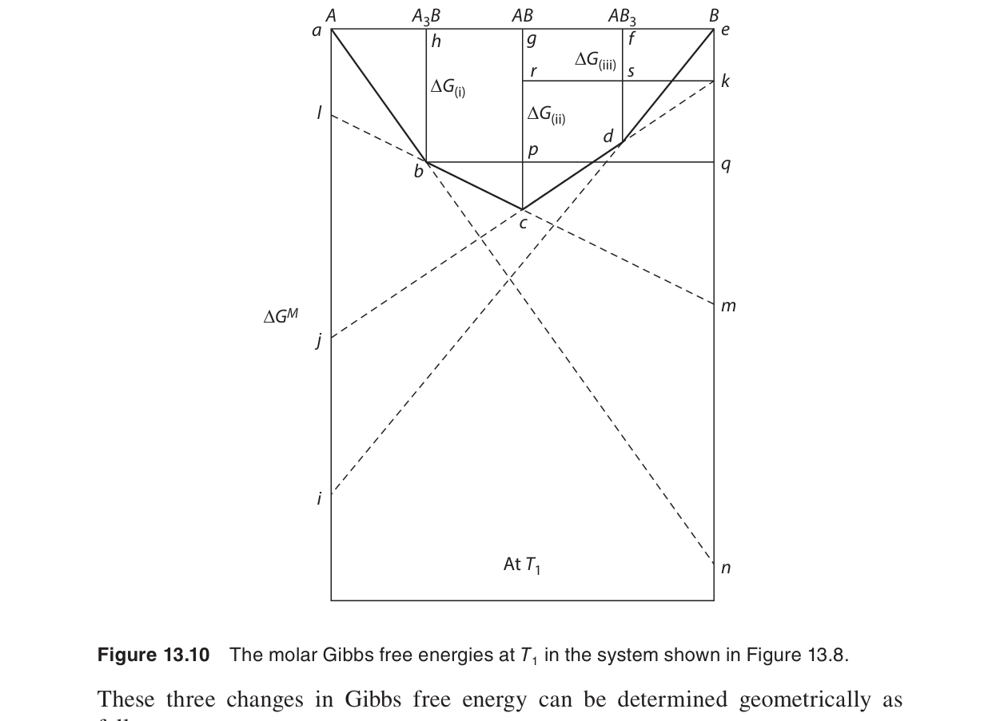
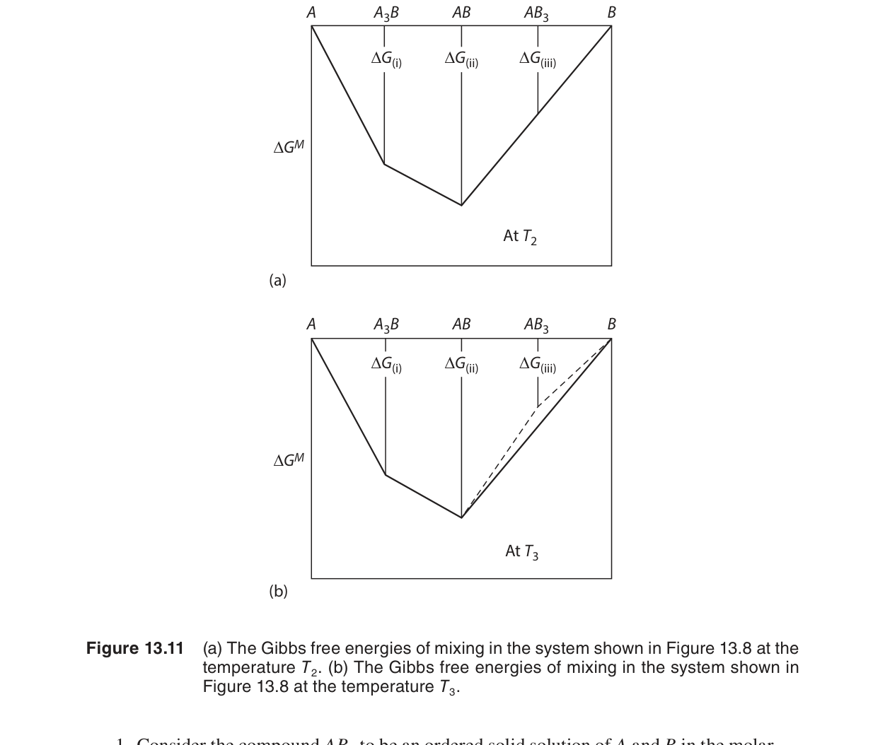
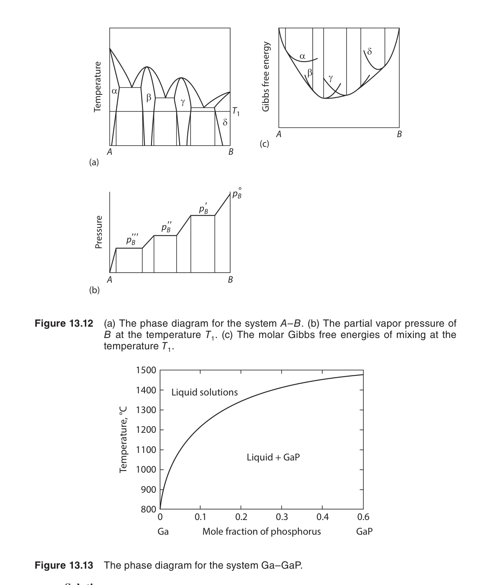
相平衡圖示的價值在於把化學勢條件變成幾何判讀。共切線代表兩相中各組分化學勢相等，因此兩個組成點可以共同存在而不再降低系統總自由能。
對含化合物系統而言，圖上的尖點、切線和相區寬度分別對應化合物穩定度、兩相共存條件與均勻性範圍。這使工程師能從自由能曲線直接看出哪些相會析出、哪些相只在特定組成範圍內穩定。
自編概念例：用共切線判斷兩相共存
若 $G$–$x$ 圖上 A-rich 固溶體與化合物 AB 之間可畫出一條共同切線，且中間組成的自由能曲線位於切線上方，則中間平均組成會分解成這兩個相，而不是形成單一均勻相。
13.8 可變組成氧化物相（Formation of Oxide Phases of Variable Composition）
非化學計量化合物——當道爾頓定律失效時
大多數氧化物不是嚴格的化學計量化合物。最著名的例子是wüstite（方鐵礦，Fe₁₋ₓO）——它在 570°C 以上穩定存在，但即使在理想配比下，它的組成也不是 FeO，而是 Fe₀.₉₅O 到 Fe₀.₈₄O（即 5–16% 的鐵空位）。這種非化學計量性來自點缺陷（point defects）——晶格中的空位、間隙原子或電子電洞。
Wüstite 的熱力學
Wüstite 相（Fe₁₋ₓO）的均勻性範圍（homogeneity range）從 $x \approx 0.05$（富鐵側）到 $x \approx 0.16$（富氧側）。氧分壓越高，鐵空位濃度越高（$x$ 越大）。
Wüstite 的生成反應可寫為：
但因為 $x$ 隨 $P_{\text{O}_2}$ 變化，$\Delta G^\circ$ 不是常數——它是 $x$ 的函數。Wüstite 的吉布斯自由能隨組成變化：
其中 $G_{\text{defect}}(x)$ 來自鐵空位的生成焓和組態熵（configurational entropy）。
缺陷化學的熱力學語言
使用 Kröger–Vink 記號，鐵空位的生成反應為：
（一個氧分子進入晶格，佔據氧位置，同時生成一個帶雙負電荷的鐵空位和兩個電子電洞）。
運用質量作用定律：
由此得到鐵空位濃度（即 $x$）與 $P_{\text{O}_2}$ 的關係。實驗發現對於 wüstite，$x \propto P_{\text{O}_2}^{1/n}$，其中 $n \approx 5$–$6$——證明缺陷不是簡單的孤立空位，而是形成了缺陷團簇（defect clusters）。
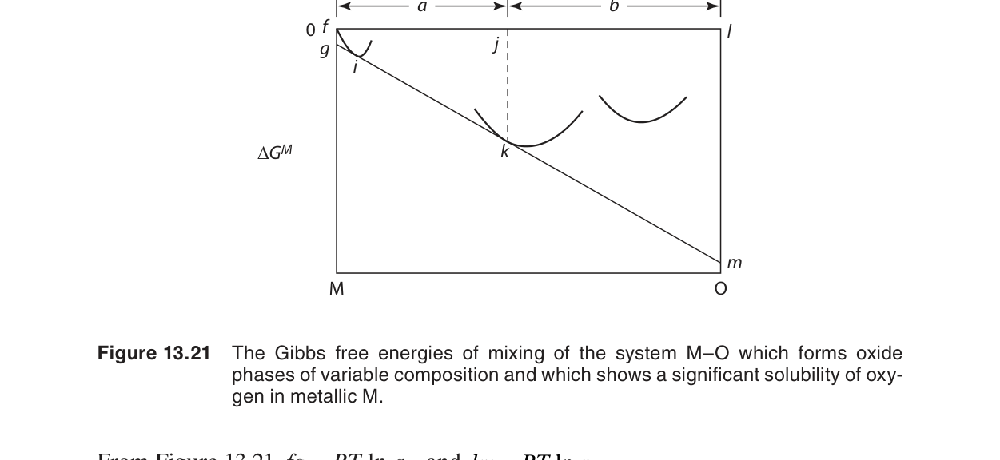
其他重要的非化學計量化合物
| 化合物 | 均勻性範圍 | 主缺陷類型 | 應用 |
|---|---|---|---|
| Fe₁₋ₓO（wüstite） | $x = 0.05$–$0.16$ | 鐵空位 + 缺陷團簇 | 煉鋼中間產物、催化劑 |
| TiO₂₋ₓ | $x = 0$–$0.01$ | 氧空位 + Ti³⁺ | 光催化、氣體感測器 |
| CeO₂₋ₓ | $x = 0$–$0.3$ | 氧空位 | SOFC 電解質、汽車觸媒 |
| YBa₂Cu₃O₇₋ₓ | $x = 0$–$1$ | 氧空位有序化 | 高溫超導體 |
| LiₓCoO₂ | $x = 0$–$1$ | 鋰空位/間隙 | 鋰離子電池正極 |
自編概念例：氧分壓如何改變 wüstite 組成
在較高氧分壓下，Fe$_{1-x}$O 需要更多鐵空位與 Fe$^{3+}$ 來維持電中性，因此 $x$ 增大；在較低氧分壓下，氧化物更接近 FeO。這說明氧化物相區寬度本身就是熱力學資訊。
13.9 氣體在金屬中的溶解度（Solubility of Gases in Metals）
Sieverts 定律——平方根關係的由來
許多雙原子氣體（H₂、N₂、O₂）溶解在金屬中時，會解離為原子。以氫在鐵中的溶解為例：
平衡常數：
在稀溶液範圍內（$a_\text{H} \approx [\%\text{H}]$，Henrian 標準態），得到Sieverts 定律：
溶解的氫濃度與氫氣分壓的平方根成正比——這是雙原子氣體解離溶解的熱力學印記。如果氣體以分子形式溶解（不解離），則會是線性關係（$[\%\text{X}] \propto P_{\text{X}_2}$）。
步驟 1：寫出溶解反應。雙原子氣體 X₂ 在金屬 M 中的溶解涉及解離：
步驟 2：寫出平衡常數。
步驟 3：使用 Henrian 標準態（1 wt%）。在稀溶液範圍內，$a_\text{X} = f_\text{X} [\%\text{X}]$，且當 $[\%\text{X}] \to 0$ 時 $f_\text{X} \to 1$。因此：
步驟 4：在無限稀溶液極限下得到 Sieverts 定律。當 $f_\text{X} = 1$：
步驟 5：$K$ 的溫度依賴性。由 van't Hoff 方程式（第十一章）：
因此 $K$（以及溶解度）隨溫度變化——對於吸熱溶解（$\Delta H^\circ > 0$，如 H 在 Fe 中），溶解度隨溫度升高而增加；對於放熱溶解（$\Delta H^\circ < 0$，如 H 在 Pd 中），溶解度隨溫度升高而降低。
步驟 6：偏離 Sieverts 定律的情況。
- 高濃度時：$f_\text{X} \neq 1$，需使用 Wagner 交互作用參數修正（見 13.10 節推導 13.4）
- 陷阱效應：晶格缺陷捕獲溶質原子，使表觀溶解度高於晶格溶解度
- 氫化物形成：在 Ti、Zr、Pd 等金屬中，高濃度下形成氫化物相——化學位不再隨濃度連續變化
氫在鋼中的溶解度——實際數據
對於液態鐵（1600°C）：
在 1873 K：
在 $P_{\text{H}_2} = 1\ \text{atm}$ 下：$[\%\text{H}] = 2.47 \times 10^{-3} \times \sqrt{1} \approx 0.0025\ \text{wt%}$（即 25 ppm）。這看起來很少——但在鋼的凝固過程中，氫的溶解度急劇下降（固態中更低），導致氫氣析出形成氫致裂紋（hydrogen-induced cracking）——這是高強度鋼焊接中最頭痛的問題之一。
氮在鋼中的溶解度
氮在鐵中的溶解與氫類似：
在 1873 K、$P_{\text{N}_2} = 1\ \text{atm}$ 下：$[\%\text{N}] \approx 0.045\ \text{wt%}$（450 ppm）。氮在鋼中遠比氫更可溶——因為 N 原子與 Fe 的化學交互作用更強。氮可以是有益的（提高強度、穩定沃斯田鐵——如不鏽鋼中）也可以是有害的（導致時效脆化）。
Sieverts 定律的偏離
在較高溶質濃度下，Sieverts 定律可能偏離：
- 活性係數效應：$f_\text{H} \neq 1$，特別是在有其他溶質存在時（見 13.10 節）
- 陷阱效應（trapping）：氫原子被晶格缺陷（差排、空位、晶界）捕獲——有效溶解度大於晶格溶解度
- 氫化物形成：對於 Ti、Zr、Pd 等金屬，氫在高濃度下形成氫化物相——完全偏離 Sieverts 定律
氧在液態銅中的溶解度——另一範例
與鐵不同，液態銅中氧的溶解度很高：
在 1373 K（1100°C）下 $\Delta G^\circ$ 為負——氧自發溶解於銅。這在銅的火法精煉中至關重要：粗銅中的雜質（Fe、Zn、Sn 等）被吹入的空氣中的氧氧化進入爐渣，而銅本身也被部分氧化。最後階段用「插木還原」（poling）——利用木材乾餾產生的還原性氣體將溶解的 Cu₂O 還原回金屬銅。
自編概念例：Sieverts 定律的平方根關係
若氫在某金屬中的溶解度滿足 $[\%H]=k\sqrt{P_{H_2}}$，把氫氣壓力從 1 atm 提高到 4 atm，溶解氫濃度只增加到 2 倍，而不是 4 倍。原因是溶解前必須先讓 $H_2$ 解離成原子氫。
13.10 含多種稀溶質的溶液（Solutions Containing Several Dilute Solutes）
Wagner 交互作用參數——多溶質系統中的活性係數
在第九章中，活性係數 $\gamma_i$（或 $f_i$）是針對二元溶液（溶劑 A + 溶質 i）定義的。但實際的鋼含有十幾種元素——C、Mn、Si、P、S、Cr、Ni、Al、O、N 等——它們之間的交互作用會顯著改變彼此的活性係數。
Carl Wagner（1952 年）提出了一個優雅的解決方案：在稀溶液極限下，活性係數的對數可以線性疊加各溶質的貢獻：
這就是Wagner 交互作用參數公式。其中：
- $f_i$：溶質 $i$ 的 Henrian 活性係數（1 wt% 標準態）
- $e_i^j$：交互作用參數（interaction parameter）——溶質 $j$ 對溶質 $i$ 的活性係數的影響
- $[\%j]$：溶質 $j$ 的重量百分濃度
- 總和包括所有溶質（包括 $i$ 自身：$e_i^i$ 是自身交互作用參數）
交互作用參數的物理意義
| $e_i^j$ 的符號 | 物理意義 | 範例 |
|---|---|---|
| $e_i^j > 0$（正） | $j$ 增加 $i$ 的活性係數 → $i$ 更「不舒適」在溶液中 → $i$ 更容易逸出（蒸氣壓增高、更容易反應） | $e_\text{O}^\text{C} > 0$：碳增加氧的活性 → 碳和氧更容易反應生成 CO |
| $e_i^j < 0$（負） | $j$ 降低 $i$ 的活性係數 → $i$ 更「舒適」在溶液中 → $i$ 更穩定、活性更低 | $e_\text{O}^\text{Al} < 0$：鋁降低氧的活性 → 這是鋁脫氧的熱力學基礎 |
| $e_i^j \approx 0$ | $j$ 對 $i$ 幾乎無影響 | $e_\text{C}^\text{Cu} \approx 0$（銅與碳交互作用很弱） |
交互作用參數是溫度的函數，通常在 1600°C（1873 K）下報告。它們從實驗測定——測量三元（或更多元）合金中溶質的蒸氣壓或化學位。
步驟 1：將活性係數視為組成的函數。在多溶質系統中，溶質 $i$ 的 Henrian 活性係數 $f_i$ 取決於所有溶質的濃度：$f_i = f_i([\%1], [\%2], \ldots, [\%n])$。
步驟 2：在無限稀溶液附近做泰勒展開。
步驟 3：利用 $f_i(0) = 1$ 並定義一階交互作用參數。
（注意：$e_i^j$ 使用以 10 為底的對數，而非自然對數。兩者之間的轉換：$\partial \ln f_i / \partial [\%j] = (\ln 10) \cdot e_i^j \approx 2.303\\,e_i^j$。）
步驟 4：截斷至一階項，得到 Wagner 公式。
步驟 5：交互作用參數的熱力學意義。由 Gibbs–Duhem 關係可證明交互作用參數之間存在倒數關係（reciprocity relation）：
修正關係為：$e_i^j M_j \approx e_j^i M_i$，其中 $M_i$、$M_j$ 是分子量。
步驟 6：高階修正。當溶質濃度超過 ~1 wt% 時，需引入二階交互作用參數 $r_i^j$ 和 $r_i^{j,k}$：
關鍵的煉鋼交互作用參數（1600°C）
| $i$ | $j$ | $e_i^j$ | 冶金意義 |
|---|---|---|---|
| O | Al | $-3.9$（極負） | 鋁是最強的脫氧劑——Al 極大降低 O 的活性 |
| O | Si | $-0.14$ | 矽是常用脫氧劑（Si 脫氧 → SiO₂） |
| O | C | $-0.45$ | 碳也降低氧的活性（真空脫碳的基礎） |
| O | Mn | $-0.02$ | 錳的脫氧能力較弱 |
| O | Cr | $-0.04$ | 鉻略微降低氧的活性 |
| S | Mn | $-0.025$ | 錳降低硫的活性——MnS 析出，避免 FeS 熱脆 |
| C | Si | $+0.08$ | 矽增加碳的活性（促進石墨化） |
| C | Mn | $-0.012$ | 錳略微降低碳的活性 |
| N | Al | $-0.058$ | 鋁降低氮的活性——AlN 析出細化晶粒 |
自編概念例：Wagner 參數的快速修正
若 $\log f_O=e_O^{Al}[\%Al]$，且 $e_O^{Al}=-3.9$、$[\%Al]=0.02$，則 $\log f_O=-0.078$，$f_O\approx0.84$。氧的活性比濃度低，脫氧平衡會因此向更低溶解氧移動。
🧮 數值範例：煉鋼脫氧計算
範例 1：鋁脫氧平衡
問題：在 1600°C 下，鋼液中含 0.05 wt% Al。假設 $P_{\text{CO}} = 1\ \text{atm}$ 且鋼中不含碳，計算平衡時鋼液中的氧含量。
脫氧反應：
熱力學數據：
在 1873 K：
平衡常數（純 Al₂O₃ 活性 = 1）：
使用 Wagner 交互作用參數計算活性係數：
對於 Al：$\log f_\text{Al} = e_\text{Al}^\text{Al}[\%\text{Al}] + e_\text{Al}^\text{O}[\%\text{O}]$。已知 $e_\text{Al}^\text{Al} \approx 0.045$，$e_\text{Al}^\text{O} \approx -6.6$。
對於 O：$\log f_\text{O} = e_\text{O}^\text{O}[\%\text{O}] + e_\text{O}^\text{Al}[\%\text{Al}]$。已知 $e_\text{O}^\text{O} \approx -0.20$，$e_\text{O}^\text{Al} = -3.9$。
由於 $[\%\text{O}]$ 很小（預期 < 0.01），氧對活性係數的貢獻可以忽略：
求解 $[\%\text{O}]$：
結論：加入 0.05 wt% Al 可以將鋼液中的氧含量從 ~500 ppm 降到 ~4 ppm——這就是鋁是「最強脫氧劑」的定量證明。注意鋁將 $f_\text{O}$ 降到 0.638（即降低氧的活性）是達成如此低氧濃度的關鍵——如果忽略交互作用參數（即假設 $f_\text{O} = 1$），計算出的 $[\%\text{O}]$ 為 2.6 ppm——低估了約 35%。
範例 2：碳脫氧（真空脫碳）
問題：在 1600°C、$P_{\text{CO}} = 0.01\ \text{atm}$（真空條件）下，鋼液中 $[\%\text{C}] = 0.10$。計算平衡氧含量。
反應：
$\Delta G^\circ = -22,200 - 38.34\,T\ \text{J/mol}$（使用 1 wt% 標準態）
在 1873 K：$\Delta G^\circ = -22,200 - 38.34 \times 1873 = -94,010\ \text{J/mol}$
平衡常數：
（忽略交互作用參數作為初步估計。如需更精確，可使用 $e_\text{C}^\text{C}$、$e_\text{O}^\text{O}$、$e_\text{C}^\text{O}$、$e_\text{O}^\text{C}$ 進行迭代。）
$[\%\text{O}] = 2.39 \times 10^{-5} / 0.10 = 2.39 \times 10^{-4}\ \text{wt%} \approx 2.4\ \text{ppm}$。
這說明真空脫碳的威力：只需將 CO 分壓降到 0.01 atm，碳就可以將氧降到極低水平——在真空感應熔煉（VIM）和真空氧氣脫碳（VOD）製程中用於生產超低碳鋼和超低氧鋼。
常見錯誤
自我檢核
1. 為什麼凝態溶液反應不能令所有凝態相活性等於 1？
因為溶液中成分的化學位會隨組成和交互作用改變；只有純凝態相以自身為標準態時活性才等於 1。
2. 何時適合使用 Henrian 1 wt% 標準態？
當成分是稀溶質，例如鋼液中的 O、N、S、Al 或 H，且工程資料通常以 wt% 表示時，Henrian 1 wt% 標準態最方便。
3. Wagner 交互作用參數為負代表什麼？
$e_i^j<0$ 表示溶質 $j$ 會降低溶質 $i$ 的活性係數，使 $i$ 在溶液中更穩定、有效活性更低。
4. 為什麼氫溶解度與 $\sqrt{P_{H_2}}$ 成正比？
因為氣相氫以 $H_2$ 分子存在，但進入金屬時以原子氫溶解。反應 $\tfrac12H_2\rightleftharpoons \underline{H}$ 使平衡式含有 $P_{H_2}^{1/2}$。
延伸學習
- 下一章：第十四章 電化學 會把化學勢差轉換成電位差，進入 Pourbaix 圖、電池與腐蝕分析。
- 資料工具：脫氧、脫硫與活度計算常需查 Wagner 參數、FactSage、Thermo-Calc 或鋼鐵熱力學資料庫。
- 工程應用：煉鋼脫氧、真空脫氣、氫脆控制、非化學計量氧化物設計與熔渣-金屬平衡都依賴本章框架。
本章摘要
- 凝態溶液中的反應平衡：$K = \prod (a_i)^{\nu_i}$。活性 $a_i = \gamma_i x_i$（Raoultian）或 $a_i = f_i [\%i]$（Henrian, 1 wt%）。平衡組成由 $K$ 和活性–組成關係聯立求解。
- 標準態選擇：Raoultian（純物質參考）適合溶劑/高濃度成分；Henrian 1 wt%（無限稀溶液參考）是鋼鐵冶金的標準。標準態之間可以轉換，$K$ 的數值隨之改變但描述相同的物理平衡。
- Gibbs 相律（含反應）：$F = C - P + 2$，其中 $C = N - R$（$N$ = 物種數，$R$ = 獨立反應數）。每個化學反應減少一個自由度。Duhem 定理：封閉系統（已知初始總組成）的平衡由 $T$ 和 $P$ 兩個變數完全確定。
- 相穩定圖（Kellogg 圖）：在 $\log P_{\text{O}_2}$–$\log P_{\text{SO}_2}$ 空間中標示金屬、氧化物、硫化物、硫酸鹽的穩定區域。用於分析高溫腐蝕和冶煉氣氛。與 Ellingham 圖（Ch12）和 Pourbaix 圖（Ch14）並列為三大熱力學圖。
- 含化合物的二元系統：化合物的 $\Delta G_f^\circ$ 決定 $G$–$x$ 曲線的凹陷深度 → 決定相圖中化合物的熔點和均勻性範圍。Fe₃C（滲碳體）是亞穩相，石墨是穩定相——這決定了鑄鐵的微觀組織。
- 非化學計量化合物：Wüstite（Fe₁₋ₓO）等氧化物的組成在一定範圍內可變。缺陷化學（空位、間隙原子）決定非化學計量性。$x$ 隨 $P_{\text{O}_2}$ 變化——可用於調控材料的功能性質（催化、離子傳導）。
- Sieverts 定律：雙原子氣體在金屬中的溶解度與氣體分壓的平方根成正比：$[\%\text{X}] = K\sqrt{P_{\text{X}_2}}$。來自氣體分子解離為原子後溶解的熱力學。氫在鋼中的溶解度 ∼25 ppm（1600°C, 1 atm H₂）→ 凝固時析出導致氫致裂紋。
- Wagner 交互作用參數：多溶質系統中 $\log f_i = \sum_j e_i^j [\%j]$。$e_i^j > 0$ → $j$ 增加 $i$ 的活性（$i$ 更易逸出）；$e_i^j < 0$ → $j$ 降低 $i$ 的活性（$i$ 更穩定）。$e_\text{O}^\text{Al} = -3.9$ 是鋁脫氧的熱力學核心——只需 0.05 wt% Al 即可將氧從 ~500 ppm 降至 ~4 ppm。
- 本章在全書中的位置：Ch9（溶液熱力學）+ Ch10（相圖）+ Ch11–12（反應平衡）→ Ch13（凝態溶液反應平衡）。這是 Gaskell 全書的頂峰——將前三部分的知識融為一體，應用於真實的材料製程。
| 章節 | 核心方程式 | 關鍵物理量 | 應用領域 |
|---|---|---|---|
| 13.1–13.2 | $K = \prod (a_i)^{\nu_i}$ | $a_i$, $\gamma_i$, $f_i$ | 所有凝態溶液反應 |
| 13.3 | $a_i^\text{H} / a_i^\text{R}$ 轉換式 | $\gamma_i^\circ$, 標準態選擇 | 鋼鐵冶金、非鐵冶金 |
| 13.4 | $F = C - P + 2$, $C = N - R$ | 自由度、獨立組分 | 系統自由度分析 |
| 13.5 | $K = f(P_{\text{O}_2}, P_{\text{SO}_2})$ | $\log P_{\text{O}_2}$, $\log P_{\text{SO}_2}$ | 高溫腐蝕、焙燒、熔煉 |
| 13.6–13.7 | $\Delta G_f^\circ$、公切線構造 | $G$–$x$ 曲線 | 相圖計算、爐渣設計 |
| 13.8 | $G(x)$ 缺陷模型 | $x$, $P_{\text{O}_2}$ | 非化學計量氧化物 |
| 13.9 | $[\%\text{X}] = K\sqrt{P_{\text{X}_2}}$ | $K$, $P_{\text{X}_2}$ | 氫脆、氮化、氧化 |
| 13.10 | $\log f_i = \sum e_i^j [\%j]$ | $e_i^j$ | 脫氧、脫硫、合金設計 |
- 第九章（溶液的行為）：Raoult/Henry 定律、活性 $a_i$、活性係數 $\gamma_i$、Gibbs–Duhem 方程式——Ch13 的語言基礎。
- 第十章（二元相圖）：$G$–$x$ 曲線、公切線構造——Ch13.6–13.7 用於含化合物的相圖分析。
- 第十一章（涉及氣體的反應）：$K$、$\Delta G^\circ = -RT\ln K$、van't Hoff——Ch13 沿用所有這些工具，只是在 $K$ 中加入活性項。
- 第十二章（Ellingham 圖）：純凝態相的氧化還原——Ch13 是 Ch12 的推廣，將純相擴展到凝態溶液。
- 第十四章（Pourbaix 圖）：電化學平衡圖——Ch13.5 的 Kellogg 圖是 Pourbaix 圖的高溫非水對應物。